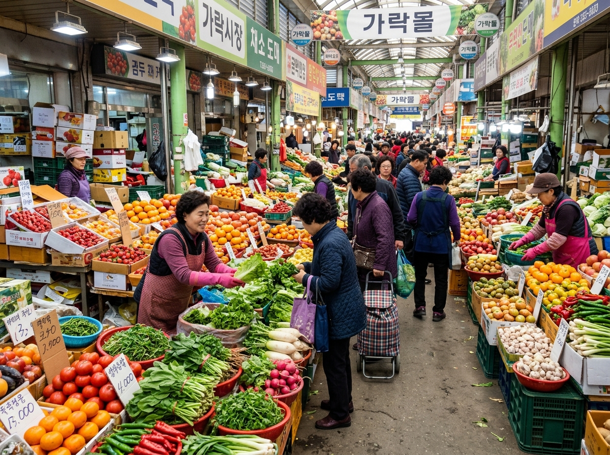

가락시장 완전 정복 가이드:
송파구 골목의 맛과 즐길 거리
송파구 가락시장의 가락몰 수산·축산·청과 코너 이용법, 가성비 좋은 회 포장 및 식당가 팁, 지하철 출구와 주차 정보를 안내합니다.

1. 도매시장에서 쾌적한 복합 먹거리 공간으로, 가락몰
1985년 문을 연 가락시장은 수도권 전체 농수산물 유통의 핵심을 담당하는 대한민국 최대 규모의 종합 도매시장입니다. 과거에는 박스 단위로 대량 구매하는 상인들과 식당 주인들이 주로 찾던 곳이었지만, 현대화 사업으로 들어선 '가락몰' 덕분에 이제는 일반 가정과 1~2인 가구도 백화점처럼 쾌적한 환경에서 신선한 식재료를 합리적인 가격에 살 수 있는 명소로 자리 잡았습니다.
특히 가락몰 1층에는 수산·축산·청과·건어물 코너가 체계적으로 나뉘어 있어 동선이 깔끔합니다. 비가 오거나 추운 겨울에도 실내에서 장을 볼 수 있으며, 유모차나 장바구니 카트를 끌고 이동하기에도 넓어 주말 가족 나들이 장보기 장소로 큰 인기를 얻고 있습니다.
2. 가락몰 수산 코너 & 3층 식당가 200% 활용법
가락시장이 서울 동남권 시민들에게 가장 사랑받는 이유 중 하나는 신선하고 가격 거품이 적은 '회센터'입니다. 1층 수산 코너에서 광어·우럭·방어·연어 등 원하는 횟감이나 대게·새우를 직접 고르면, 즉석에서 깔끔하게 손질해 줍니다.
포장해 집으로 가져가는 손님도 많지만, 3층 전문 식당가(초장집)로 올라가면 상차림비만 내고 방금 뜬 회와 매운탕, 게 찜을 바로 즐길 수 있습니다. 또한 축산 코너에서 고른 최상급 한우를 구워 먹을 수 있는 정육식당 구역도 잘 갖춰져 있어 회와 고기를 동시에 즐기려는 모임 장소로도 손색이 없습니다.
3. 실패 없는 청과·농산물 알뜰 쇼핑 노하우
청과 코너에서는 제철 딸기, 감귤, 사과, 샤인머스캣 같은 과일을 시중 마트보다 20~30% 이상 저렴하게 구매할 수 있습니다. 상자 단위로 사면 훨씬 경제적이지만, 가락몰 소매 구역에서는 한 바구니나 소포장 단위로도 판매하므로 1~2인 가구도 부담이 없습니다.
가락시장 도매 경매에서 방금 낙찰된 물건이 들어오는 평일 오전 9시~11시 사이가 가장 물건 상태가 좋고 종류도 다양합니다. 온누리상품권(모바일·카드형) 가맹점도 많아 충전 할인 혜택을 챙기면 장바구니 물가를 크게 절약할 수 있습니다.
한눈에 보는 방문 핵심 정보
| 위치 · 지하철 | 서울 송파구 양재대로 932 · 3·8호선 가락시장역 2·2-1번 출구 바로 앞 |
|---|---|
| 영업시간 | 가락몰 판매동 07:00 ~ 22:00 / 식당가 10:00 ~ 22:00 / 경매장 심야 운영 |
| 정기 휴무 | 도매시장 일요일(품목별 상이) / 가락몰 판매동 연중무휴(개별 점포 자율 휴무) |
| 대표 먹거리·품목 | 제철 모둠회, 대게·킹크랩, 한우·돼지고기, 박스 단위 제철 과일·김장 채소 |
| 주차 · 편의 | 대형 지하·지상 주차장 완비(구매 금액별 주차 할인권 지급), 쾌적한 냉난방 실내 쇼핑몰 |
추천 가락시장 장보기 & 미식 동선
- 오후 3시 · 가락몰 1층 청과·건어물 코너: 계절 과일과 견과류, 반찬거리를 먼저 둘러보며 시세를 확인합니다.
- 오후 4시 30분 · 1층 수산·축산 코너 쇼핑: 저녁 식사용 모둠회나 한우를 구입해 손질을 맡깁니다.
- 오후 5시 30분 · 3층 식당가 식사 & 석촌호수 산책: 3층에서 푸짐한 저녁을 먹은 뒤 차량·지하철로 5분 거리의 석촌호수나 올림픽공원에서 산책으로 마무리합니다.
자주 묻는 질문 (FAQ)
Q. 가락시장에서 회를 살 때 1인분만 소량 포장할 수도 있나요?
네, 가락몰 1층 수산 코너 대부분의 점포에서 2~3만 원대의 1~2인용 소포장 모둠회를 상시 판매하고 있어 혼자 방문해도 부담 없이 구매할 수 있습니다.
Q. 주차 요금 할인은 어떻게 받나요?
물건을 구매한 점포에서 차량 번호를 말하면 가맹점 포스기를 통해 주차 할인 시간을 등록해 주므로 출차 전 반드시 요청하세요.